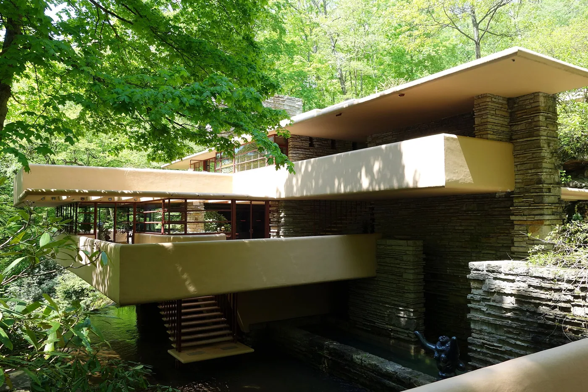
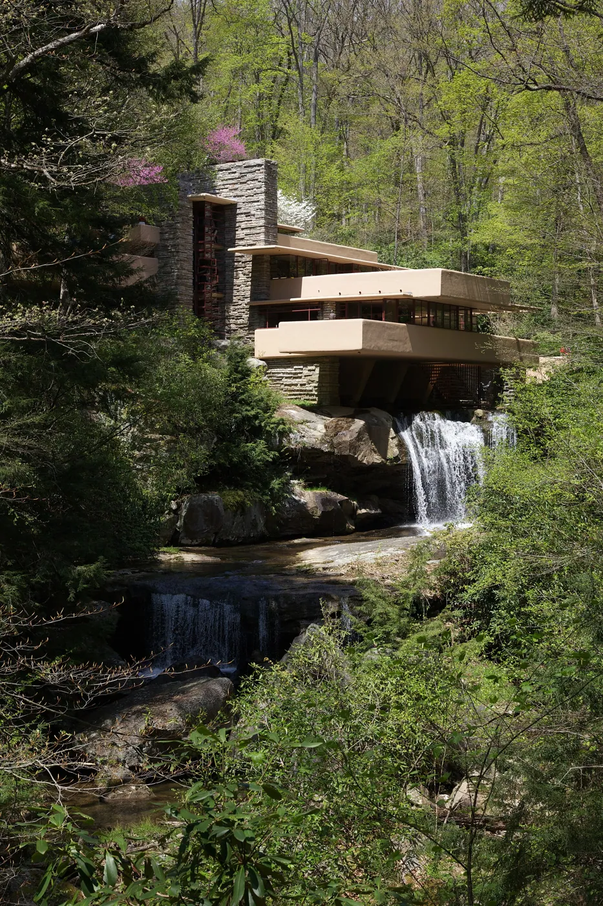
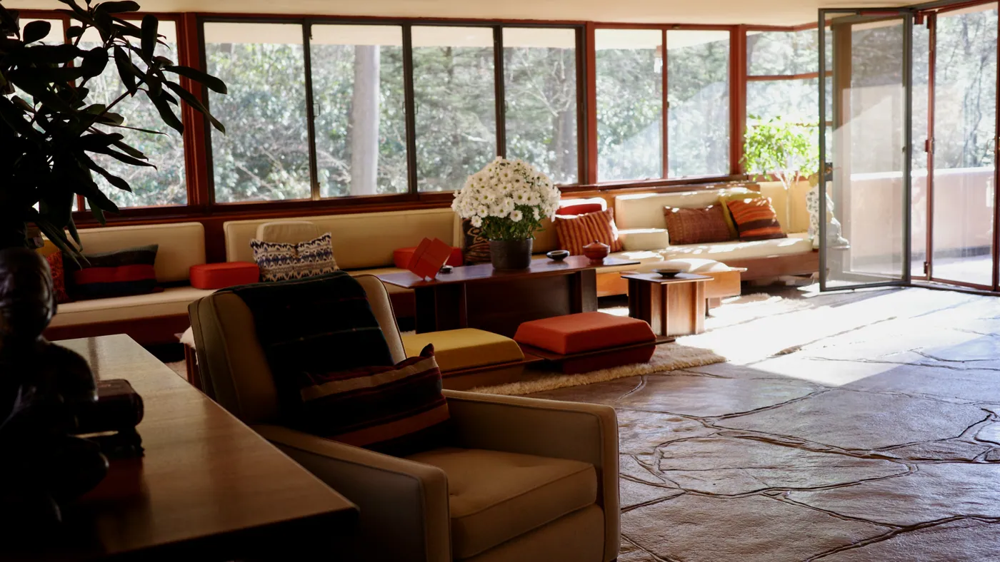
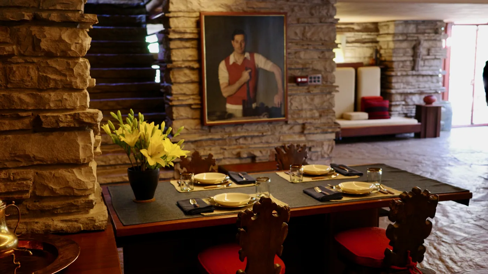
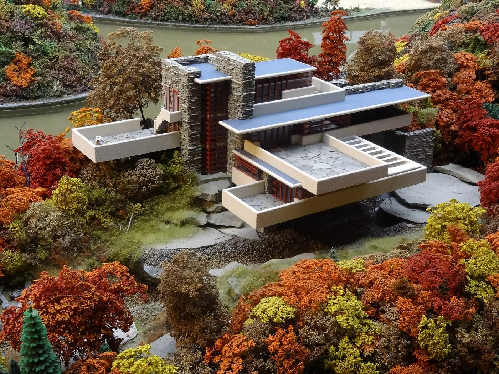

1/8 · Exterior · Fallingwater at Mill Run, PennsylvaniaPhoto: lachrimae72 · CC0 · source2/8 · Exterior · Fallingwater (Kaufmann Residence) by Frank Lloyd WrightPhoto: Daderot · CC0 · source
3/8 · ExteriorPhoto: Ruhrfisch · CC BY-SA 3.0 · source
4/8 · Interior · Fallingwater - obývací pokoj včetně původního vybaveníPhoto: Sakul9 · CC BY-SA 4.0 · source5/8 · Interior · Fallingwater - obývací pokoj včetně původního vybaveníPhoto: Sakul9 · CC BY-SA 4.0 · source
6/8 · Detail · Fallingwater - obývací pokoj včetně původního vybaveníPhoto: Sakul9 · CC BY-SA 4.0 · source7/8 · ContextPhoto: Joshua G Chang · CC BY-SA 4.0 · source
8/8 · Drawing · Architectural models in the Gemeentemuseum Den HaagPhoto: Sailko · CC BY 3.0 · sourceHouse · Modernism
Fallingwater
Frank Lloyd Wright · Mill Run, United States · 1939
Key featuresConcrete terraces cantilevered over a waterfall: building and site as one.
- Architect
- Frank Lloyd Wright
- Place
- Mill Run, United States
- Year
- 1939
- Typology
- House
- Movement
- Modernism
- Region
- Americas
See it on the wall